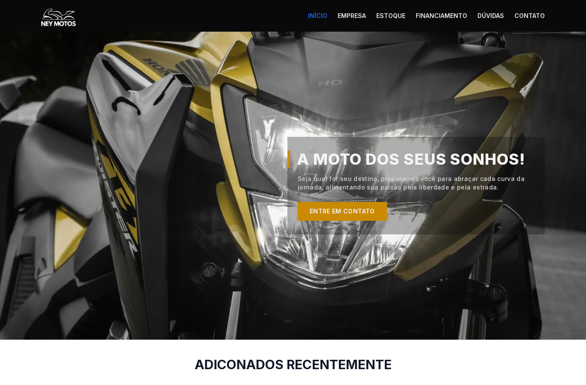
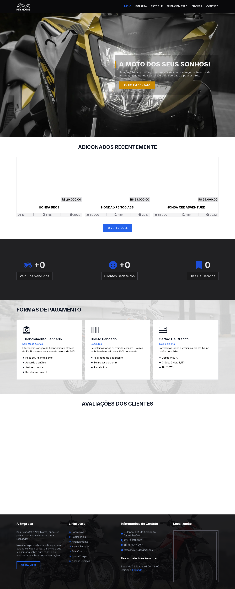

Sistema de Investigação de Marca e Identidade Online
https://nei-motos.vercel.app/
Prioridade: MEDIUM · Cenário: B_AMBIGUOUS_COMMUNICATION · Revisão humana: PENDING
A página corresponde a uma revenda de veículos (dentro do escopo) que divulga a opção de financiamento por meio da BV Financeira. Embora a identidade própria da Ney Motos predomine e não haja apropriação indevida ostensiva de logotipo na página inicial, o estabelecimento omite seu CNPJ e a declaração formal de correspondente bancário exigida pela Resolução CMN nº 4.935/2021, configurando relação comercial ambígua. [Revisor: CONFIRM] O estabelecimento é uma revenda de motocicletas ('Ney Motos'), enquadrando-se no escopo prioritário de lojistas/terceiros comerciais. A página oferta financiamento veicular citando expressamente a BV Financeira, porém omite CNPJ, razão social formal e os avisos regulatórios obrigatórios de correspondente bancário previstos na Resolução CMN nº 4.935/2021. A hipótese de comunicação ambígua com necessidade de revisão sustenta-se plenamente.


| Ref | Tipo | Local | Conteúdo |
|---|---|---|---|
| E-URL | domain | url | URL final: https://nei-motos.vercel.app/ (domínio: nei-motos.vercel.app) |
| E-COLLECT | network | collection | Status da coleta: OK; HTTP 200; ocorrências: network did not become idle (continuing) |
| E-DISC-001 | text | search_index | Índice de busca (grounding): vercel.app — **URL:** `https://ney-motos.vercel.app` | Além disso, reproduz integralmente os textos e etapas institucionais do banco (*"Passo a passo do Financiamento Banco BV"*, *"Mais sobre o financiamento do banco BV"* e botão *"Simular Financiamento"*), gerando confusão sobre a titularidade do serviço | Omite razão social, CNPJ e declaração formal de correspondente bancário; exibe apenas endereço físico e contatos de WhatsApp/e-mail |
| E-SHOT-VIEWPORT | screenshot | viewport | evidence/C4858b74769/attempt-1/viewport.png (sha256 b68d2dbe2c3e5564…) |
| E-SHOT-FULL | screenshot | page | evidence/C4858b74769/attempt-1/fullpage.png (sha256 ad0bf43bc1c57275…) |
| E-TITLE | title | head | Ney Motos revenda de veículos |
| E-META-1 | meta | head | description: Venda de motos em Capelinha-MG |
| E-HEAD-1 | heading | page | A MOTO DOS SEUS SONHOS! |
| E-HEAD-2 | heading | page | A MOTO DOS SEUS SONHOS! |
| E-HEAD-3 | heading | page | A MOTO DOS SEUS SONHOS! |
| E-HEAD-4 | heading | page | ADICONADOS RECENTEMENTE |
| E-HEAD-5 | heading | page | FORMAS DE PAGAMENTO |
| E-HEAD-6 | heading | page | Financiamento Bancário |
| E-HEAD-7 | heading | page | Boleto Bancário |
| E-HEAD-8 | heading | page | Cartão De Crédito |
| E-HEAD-9 | heading | page | AVALIAÇÕES DOS CLIENTES |
| E-HDR | text | header | INÍCIO EMPRESA ESTOQUE FINANCIAMENTO DÚVIDAS CONTATO |
| E-FOLD | text | viewport (acima da dobra) | Início Empresa Estoque Financiamento Dúvidas Contato A moto dos seus sonhos! Seja qual for seu destino, preparamos você para abraçar cada curva da jornada, alimentando sua paixão pela liberdade e pela estrada. Entre Em Contato A moto dos seus sonhos! Seja qual for seu destino, preparamos você para abraçar cada curva da jornada, alimentando sua paixão pela liberdade e pela estrada. Entre Em Contato A moto dos seus sonhos! Seja qual for seu destino, preparamos você para abraçar cada curva da jornada, alimentando sua paixão pela liberdade e pela estrada. Entre Em Contato Adiconados Recentemente |
| E-FTR | text | footer | A Empresa Bem-vindo(a) à Ney Motos, onde sua paixão por motocicletas se torna realidade! Nossa equipe dedicada está aqui para guiá-lo em cada passo, garantindo que sua jornada sobre duas rodas seja emocionante e livre de preocupações. SAIBA MAIS Links Úteis Sobre Nós Página Inicial Financiamento Nosso Estoque Fale Conosco Nossa Equipe Nossos Clientes Informações de Contato R. Japão, 198, Jd Aeroporto, Capelinha-MG (33) 9 9111-3641 (11) 9 9887-7120 motosney794@gmail.com Horário de Funcionamento Segunda à Sábado: 08:00 - 18:00 Domingo: Fechado Localização |
| E-NAV | nav | header | <https://nei-motos.vercel.app/> | INÍCIO <https://nei-motos.vercel.app/> | EMPRESA <https://nei-motos.vercel.app/sobre-nos> | ESTOQUE <https://nei-motos.vercel.app/estoque> | FINANCIAMENTO <https://nei-motos.vercel.app/financiamento> | DÚVIDAS <https://nei-motos.vercel.app/perguntas-frequentes> | CONTATO <https://nei-motos.vercel.app/contato> |
| E-CTA-1 | cta | page | ENTRE EM CONTATO |
| E-CTA-2 | cta | page | ENTRE EM CONTATO |
| E-CTA-3 | cta | page | ENTRE EM CONTATO |
| E-CONTACT-1 | contact | page | ENTRE EM CONTATO <https://wa.me/+5533991113641?text=Ol%C3%A1!%20Poderia%20me%20informar%20quais%20modelos%20de%20motos%20est%C3%A3o%20dispon%C3%ADveis%20no%20momento%20e%20quais%20op%C3%A7%C3%B5es%20de%20pagamento%20voc%C3%AAs%20oferecem?> |
| E-CONTACT-2 | contact | page | ENTRE EM CONTATO <https://wa.me/+5533991113641?text=Ol%C3%A1!%20Poderia%20me%20informar%20quais%20modelos%20de%20motos%20est%C3%A3o%20dispon%C3%ADveis%20no%20momento%20e%20quais%20op%C3%A7%C3%B5es%20de%20pagamento%20voc%C3%AAs%20oferecem?> |
| E-CONTACT-3 | contact | page | ENTRE EM CONTATO <https://wa.me/+5533991113641?text=Ol%C3%A1!%20Poderia%20me%20informar%20quais%20modelos%20de%20motos%20est%C3%A3o%20dispon%C3%ADveis%20no%20momento%20e%20quais%20op%C3%A7%C3%B5es%20de%20pagamento%20voc%C3%AAs%20oferecem?> |
| E-CONTACT-4 | contact | footer | (33) 9 9111-3641 <tel:+553399111-3641> |
| E-CONTACT-5 | contact | footer | (11) 9 9887-7120 <tel:+5511998877120> |
| E-IMG-1 | image | header (acima da dobra) | imagem alt='Ney motos logo' src=https://nei-motos.vercel.app/_next/image?url=%2F_next%2Fstatic%2Fmedia%2Flogo.a7149c55.png&w=640&q=75 (100x50, acima da dobra) |
| E-TXT-001 | text | page | Oferecemos opção de financiamento através da BV Financeira, com entrada mínima de 30%. |
| E-TXT-002 | text | page | Boleto Bancário |
| E-TXT-003 | text | page | Parcelamos todos os veículos em até 3 vezes no boleto bancário com 80% de entrada. |
| Dimensão | Sinal | Achado | Refs |
|---|---|---|---|
| VISUAL_IDENTITY | LEGITIMATE | O design da página inicial reflete a identidade própria da loja de motos Ney Motos, sem mimetização das cores institucionais do Banco BV. | E-SHOT-VIEWPORT E-SHOT-FULL E-IMG-1 |
| DECLARED_COMMERCIAL_IDENTITY | CONFUSION | Identificação comercial incompleta; a loja divulga endereço e telefones mas não apresenta razão social ou CNPJ. | E-FTR E-TITLE E-DISC-001 |
| CORRESPONDENT_TRANSPARENCY | CONFUSION | Inexistência de menção expressa à condição de correspondente bancário ou indicação da ouvidoria da instituição financeira parceira. | E-TXT-001 E-DISC-001 |
| INSTITUTIONAL_LANGUAGE | NEUTRAL | A linguagem descreve a oferta de financiamento em terceira pessoa ('através da BV Financeira'). | E-TXT-001 |
| LOGO_USAGE | NEUTRAL | Não foi identificado logotipo do Banco BV ou da BV Financeira na área visível inicial ou na página principal; a marca é referenciada apenas em texto simples. | E-SHOT-FULL E-TXT-001 |
| SERVICE_JOURNEY | NEUTRAL | O fluxo de contratação direciona o interessado para contato direto com a loja via WhatsApp. | E-CONTACT-1 E-CONTACT-2 E-TXT-001 |
| CONTACT_CHANNELS | NEUTRAL | Canais de contato apresentados pertencem diretamente à revenda de motos (WhatsApp e e-mail próprio). | E-FTR E-CONTACT-1 E-CONTACT-4 |
| CONSUMER_CONFUSION | CONFUSION | A ausência de clareza regulatória sobre o papel de intermediação e a falta de CNPJ geram incerteza jurídica para o consumidor sobre a intermediação de crédito. | E-TXT-001 E-DISC-001 |
A página corresponde a uma revenda de veículos (dentro do escopo) que divulga a opção de financiamento por meio da BV Financeira. Embora a identidade própria da Ney Motos predomine e não haja apropriação indevida ostensiva de logotipo na página inicial, o estabelecimento omite seu CNPJ e a declaração formal de correspondente bancário exigida pela Resolução CMN nº 4.935/2021, configurando relação comercial ambígua.
Nenhum CNPJ ou razão social identificáveis no conteúdo coletado.
| Tipo | Valor | Ref | Contexto |
|---|---|---|---|
| domain | vercel.app | E-URL | |
| motosney794@gmail.com | E-FTR | ||
| Índice de busca (grounding): vercel.app — **URL:** `https://ney-motos.vercel.app` | Além disso, reproduz integralmente os textos e etapas institucionais do banco (*"Passo a passo do Financiamento Banc | E-DISC-001 | ||
| ENTRE EM CONTATO <https://wa.me/+5533991113641?text=Ol%C3%A1!%20Poderia%20me%20informar%20quais%20modelos%20de%20motos%20est%C3%A3o%20dispon%C3%ADveis%20no%20momento%20e%20quais%20op%C3%A7%C3%B5es%20d | E-CONTACT-1 |
Mapeamento indicativo para apoio à auditoria. Não constitui conclusão regulatória; a decisão definitiva pertence à auditoria.
Fonte: NORMATIVE
Art. 14. O contrato de correspondente deve estabelecer: [...] II - vedação à utilização, pelo contratado, de logomarca ou de outros atributos que sejam similares aos adotados pela instituição contratante em suas agências, postos de atendimento, sítio eletrônico na internet, aplicativo ou outras plataformas de comunicação em rede;
Evidência observada: E-IMG-1 E-SHOT-FULL E-SHOT-VIEWPORT
Fonte: NORMATIVE
Art. 14. O contrato de correspondente deve estabelecer: [...] III - divulgação ao público, pelo contratado, de sua condição de prestador de serviços à instituição contratante, identificada pelo nome com que é conhecida no mercado, com descrição dos produtos e serviços oferecidos e canais de contato da instituição contratante, inclusive de sua ouvidoria, em local visível, em destaque e em formato legível, por meio de: a) sítio eletrônico do correspondente na internet, acessível na página inicial; b) aplicativo e outras plataformas de comunicação em rede do correspondente; [...]
Hipótese: Divulgação ao público da condição de prestador de serviços/parceria ausente, insuficiente, ambígua ou sem destaque. A norma disciplina correspondentes contratados; o responsável não foi identificado como correspondente.
Evidência observada: E-DISC-001 E-FTR E-HEAD-6 E-TITLE E-TXT-001
Informação faltante:
Fonte: NORMATIVE
Art. 3º O correspondente atua por conta e sob as diretrizes da instituição contratante, que assume inteira responsabilidade pelo atendimento prestado aos clientes e usuários por meio do contratado.
Evidência observada: —
Se o responsável não for correspondente contratado, os indícios podem caracterizar uso indevido de marca ou fraude, fora do escopo da Res. 4.935: avaliar encaminhamento às áreas jurídica/segurança.
Limitações: requisitos contratuais/internos não fornecidos: mapeamento limitado ao texto normativo
Decisão: CONFIRM → REVIEW_REQUIRED / MEDIUM
O estabelecimento é uma revenda de motocicletas ('Ney Motos'), enquadrando-se no escopo prioritário de lojistas/terceiros comerciais. A página oferta financiamento veicular citando expressamente a BV Financeira, porém omite CNPJ, razão social formal e os avisos regulatórios obrigatórios de correspondente bancário previstos na Resolução CMN nº 4.935/2021. A hipótese de comunicação ambígua com necessidade de revisão sustenta-se plenamente.
| Tema | Severidade | Questionamento | Refs |
|---|---|---|---|
| domain_attribution | MEDIUM | Responsável pela página não identificado; a conclusão sobre a marca não pode ser atribuída a um estabelecimento específico. | E-URL |
| Fonte | Consulta / hipótese | URL original | Título / trecho |
|---|---|---|---|
| grounding | Objetivo: Lojas de motos que oferecem financiamento usando a marca em destaque.
Execute no Google Search as seguintes consultas (dorks):
- ("bv financeira" OR "Banco BV") motos financiamento loja -site:bv.com.br -site:bancobv.com.br -site:bvfinanceira.com.br -site:bvinvestimentos.com.br -site:napista.com.br -site:bvopen.com.br -site:meufinanciamentosolar.com.br -site:votorantim.com.br -site:vam.com.br -site:reclameaqui.com.br -site:jusbrasil.com.br -site:jus.br
Liste de forma abrangente as páginas públicas encontradas (até 12 resultados distintos), informando para cada uma o nome do estabelecimento/perfil, a URL e como a marca é utilizada (destaque visual, título, feirão, simulador, redes sociais e se há ou não identificação clara de CNPJ e condição de correspondente bancário). H2-product:financiamento de moto | https://nei-motos.vercel.app/ | vercel.app **URL:** `https://ney-motos.vercel.app` | Além disso, reproduz integralmente os textos e etapas institucionais do banco (*"Passo a passo do Financiamento Banco BV"*, *"Mais sobre o financiamento do banco BV"* e botão *"Simular Financiamento"*), gerando confusão sobre a titularidade do serviço | Omite razão social, CNPJ e declaração formal de correspondente bancário; exibe apenas endereço físico e contatos de WhatsApp/e-mail |
Original: https://nei-motos.vercel.app/
Final: https://nei-motos.vercel.app/
| Artefato | Caminho | SHA-256 | Bytes |
|---|---|---|---|
| screenshot_viewport | evidence/C4858b74769/attempt-1/viewport.png | b68d2dbe2c3e5564595a4df4d475c4c6b6c5f579c201d7bfcd8e239482c3c9de | 704676 |
| screenshot_full | evidence/C4858b74769/attempt-1/fullpage.png | ad0bf43bc1c57275226edd8494d0e22c98c5d95a17eaee74f9e5b5ea196293c6 | 1430059 |
| html | evidence/C4858b74769/attempt-1/page.html.txt | 902123b8d955dd4e055d18c74cc717d6576dc236160d1781688f53650bfc5cae | 81139 |
| text | evidence/C4858b74769/attempt-1/text.txt | 3c6dd85365aaa71d74872b4980b88e03c258fd262a0f6fea7107983d8676d5fd | 2038 |
| page_data | evidence/C4858b74769/attempt-1/page.json | 847f204fb8b47b23505e757b4d36a53f8a12308d9127c0dddc9251901344cf20 | 11767 |
| Quando | De | Para | Nota |
|---|---|---|---|
| 2026-11-25T15:36:32+00:00 | DISCOVERED | QUEUED | prioritised (score 3.5) |
| 2026-11-25T15:37:50+00:00 | QUEUED | COLLECTING | |
| 2026-11-25T15:37:59+00:00 | COLLECTING | COLLECTED | |
| 2026-11-25T15:37:59+00:00 | COLLECTED | ANALYZING | |
| 2026-11-25T15:38:48+00:00 | ANALYZING | REVIEWING | |
| 2026-11-25T15:38:55+00:00 | REVIEWING | COMPLETED |